About
Super Mario and the Rainbow Stars is a project that aims to bring the unique traits of the Paper Mario and Mario & Luigi series into a 2D platformer. Explore 6 different chapters, discover new partners and unique worlds, and stop Starnox's evil plans!
Features: Local multiplayer, fancy movement, cutscenes, 3D world map, a 3 HP life system, partner system, badge system and more!
Download SMATRS (Chapter 1+2)
Story
One day, the Mario Bros were hanging out near their house until they suddenly received a letter from Peach. They've been invited to the Star Festival! Before that festival starts, they're planning to take a trip with a hot air balloon. Things turn out for the worse once something goes wrong...
Everyone gets scattered, and now it's up to Mario to find his friends, as well as retrieve the Rainbow Stars, which were scattered by the newly awakened Starnox. Mario must get these Rainbow Stars, otherwise the plan of plunging the world into darkness might succeed... Thankfully Mario will be accompanied by many different partners alongside his journey.
From a star kid to a ghostly spirit, and from a blooper captain to the dark star itself, safe to say Mario will encounter many unique friends and foes! This adventure will take you through the archipelago where Yoshis reside, an abstract forest inhabited by many different ghosts, and more.
Screenshots
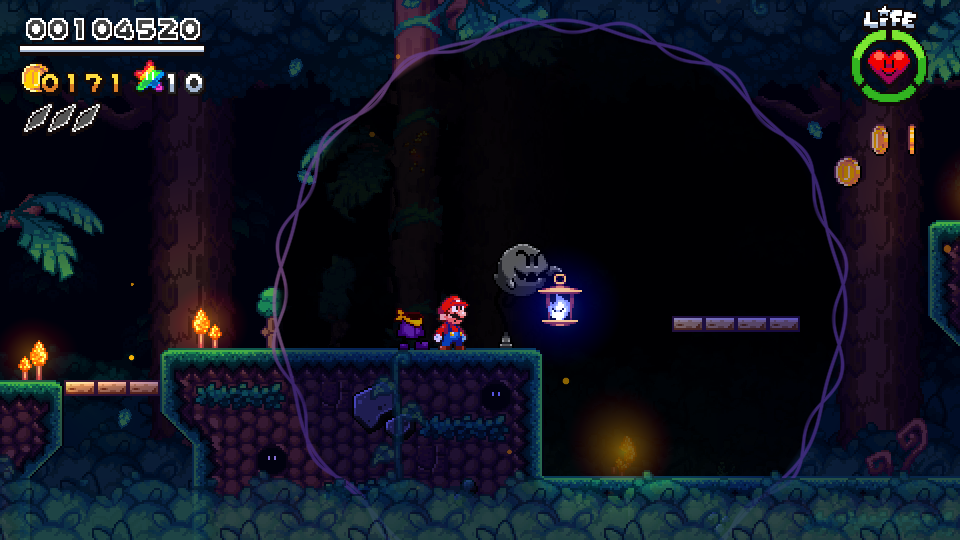
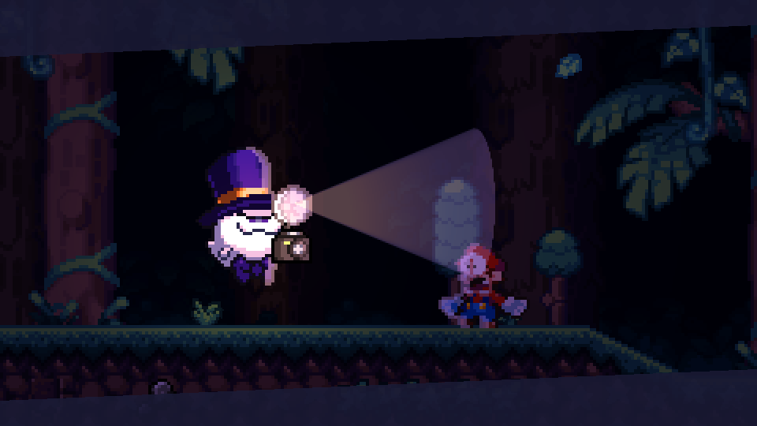
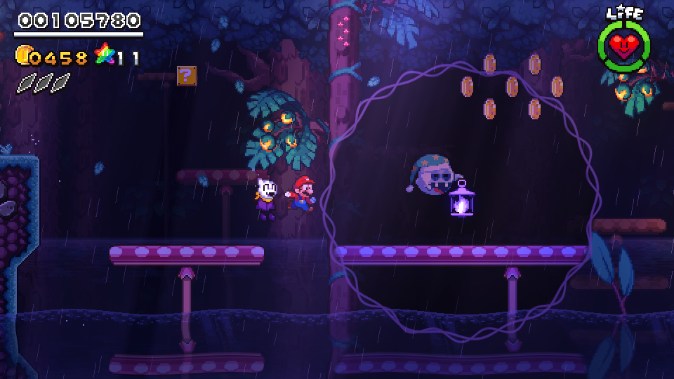
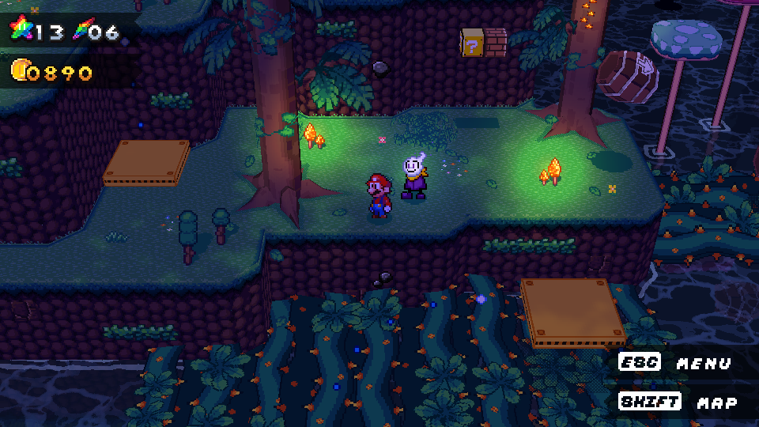
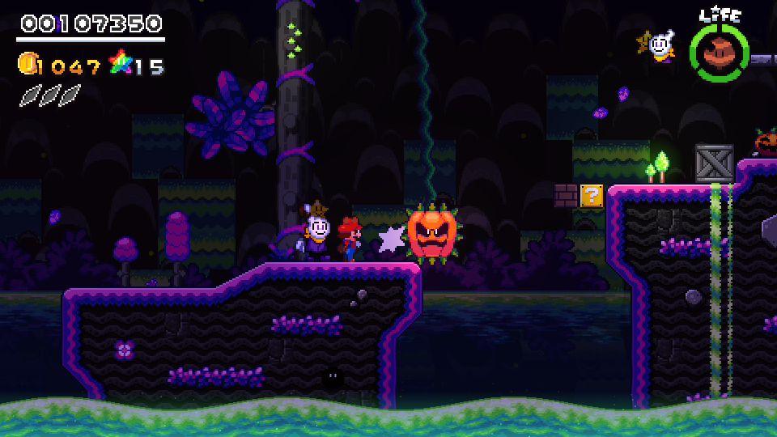
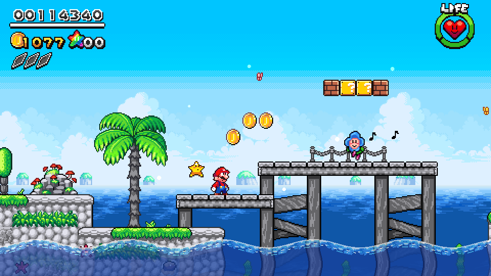
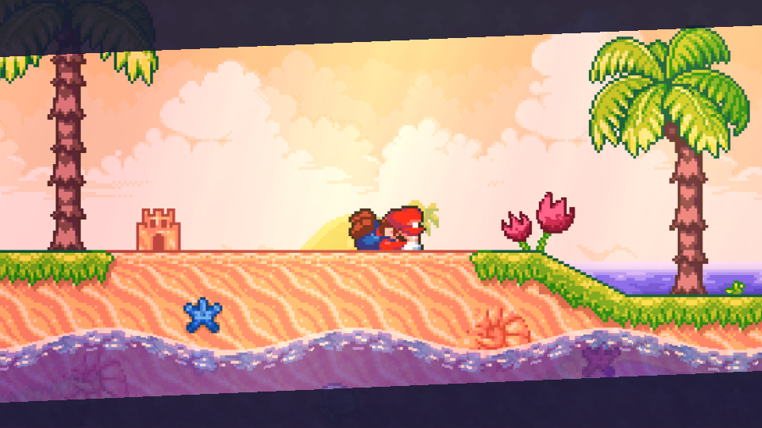
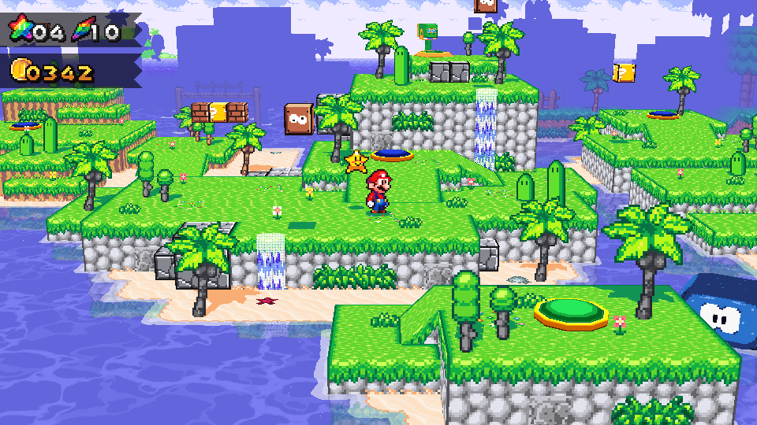
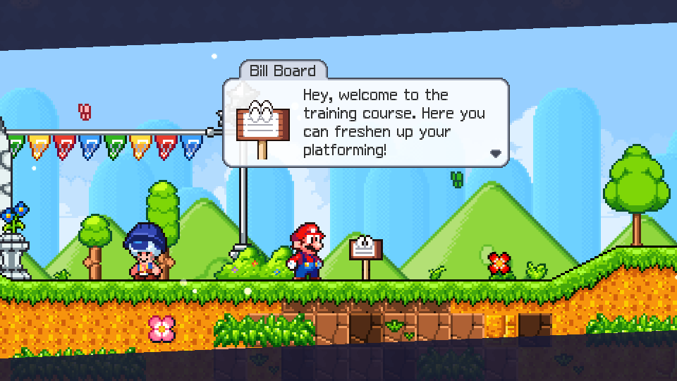
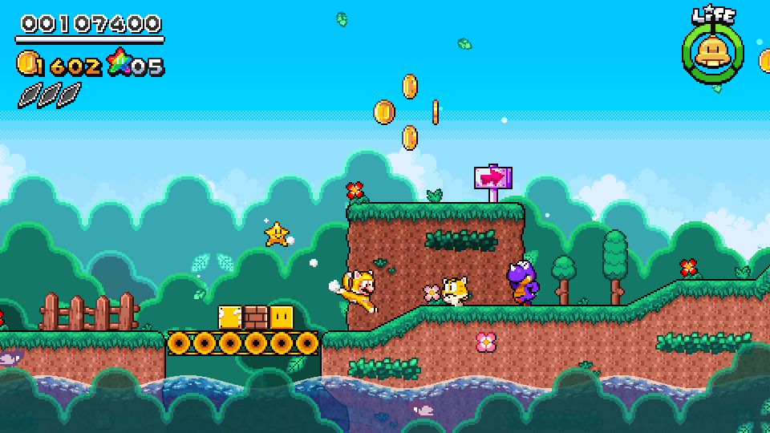
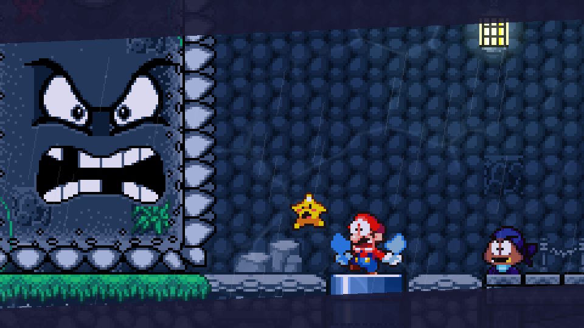
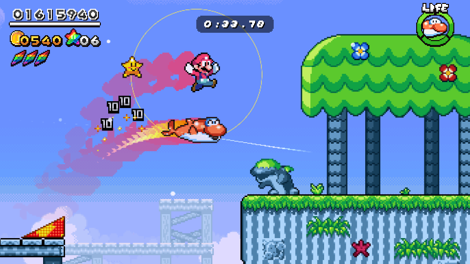
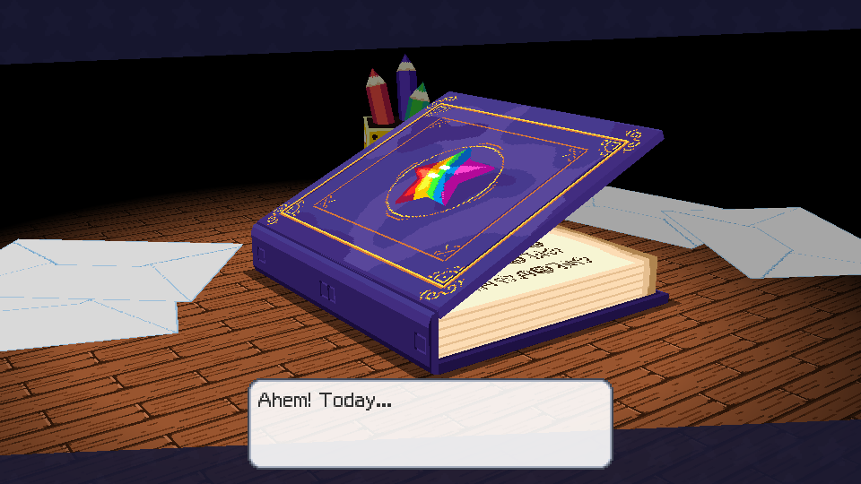
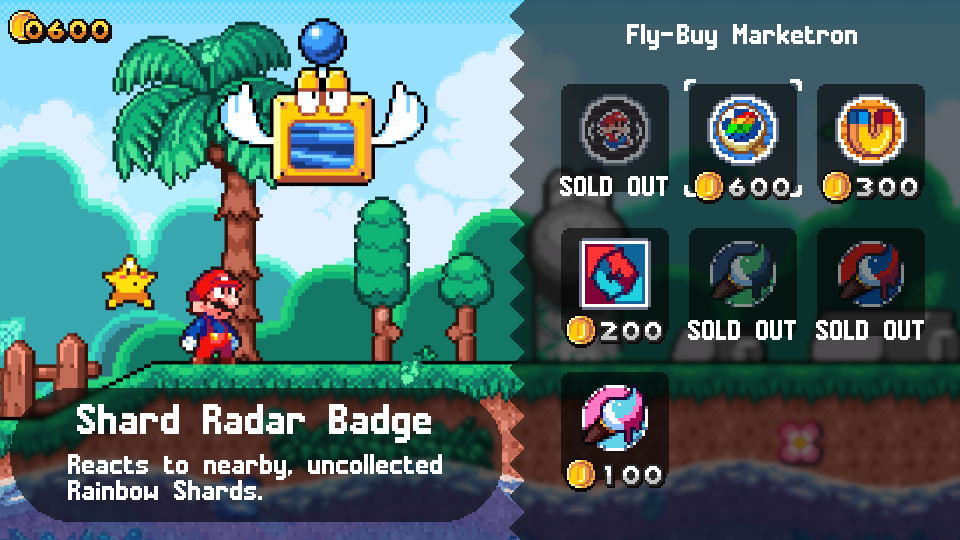
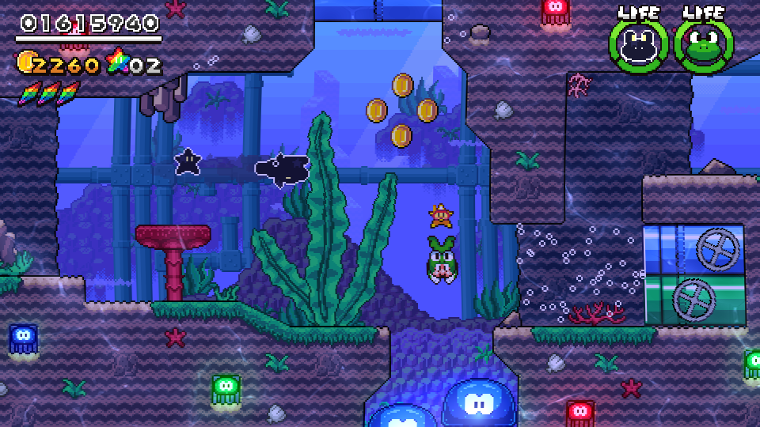